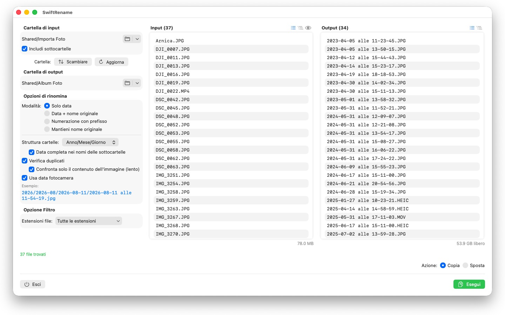
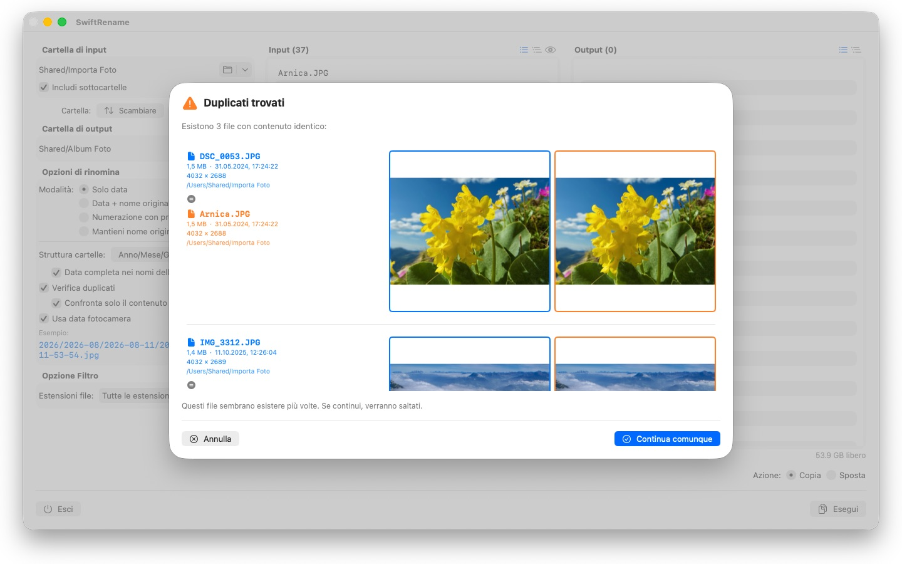

Rinomina centinaia di foto e file in una volta: per data della fotocamera, numerati o in cartelle per anno e mese. I duplicati sono trovati e ignorati automaticamente.

Per i fotografi


SwiftRename è un potente strumento per rinominare, copiare e spostare i file in blocco sul tuo Mac. Scegli una cartella, decidi come devono apparire i nuovi nomi, controlla l'anteprima in tempo reale — ed esegui.
24 lingue: Deutsch · English · Español · Français · Italiano · Nederlands · Português · Svenska · Norsk · Suomi · Polski · Čeština · Hrvatski · Magyar · Română · Türkçe · Русский · Українська · فارسی · ไทย · 日本語 · 한국어 · 简体中文 · 繁體中文
MODALITÀ DI RINOMINA
- Solo data: assegna ai file un nome basato sulla loro data (es. 2024-01-15 alle 14-30-00)
- Data + nome originale: antepone la data e conserva il nome originale
- Numerazione con prefisso: numerazione progressiva con un tuo prefisso personalizzato (es. Viaggio_0001)
- Mantieni nome originale: lascia i nomi invariati e si limita a ordinare i file nelle cartelle
STRUTTURA DELLE CARTELLE
Ordina i file automaticamente in cartelle per anno, mese o giorno — con la data completa in ogni nome di sottocartella, se lo preferisci (es. 2026/2026-02/2026-02-20). Ai file distribuiti su più decenni vengono anteposte cartelle per decennio. Oppure scegli «Mantieni» per rispecchiare nella destinazione la gerarchia di sottocartelle della cartella di origine.
DATA DELLA FOTOCAMERA
Le foto e i video ricevono come nome il momento in cui sono stati effettivamente scattati: SwiftRename legge la data della fotocamera (EXIF) — dai formati RAW di tutti i principali produttori di fotocamere (Canon, Nikon, Sony, Fujifilm e molti altri) così come da HEIC, JPEG, PNG, TIFF e dai comuni formati video. Se un file non ha una data della fotocamera, viene usata al suo posto la data di creazione.
RILEVAMENTO DEI DUPLICATI
I duplicati vengono rilevati in base a dimensione e contenuto del file — indipendentemente dalla data di creazione, così la stessa foto con un orario diverso non può sfuggire. Un confronto opzionale delle immagini individua persino le foto salvate di nuovo da altre app. Le anteprime in miniatura permettono di confrontare i due file affiancati; i duplicati vengono ignorati automaticamente.
ALTRE FUNZIONI
- Copia o sposta con un clic — inclusa la rinomina sul posto all'interno della stessa cartella
- Accesso rapido alle cartelle di ingresso e uscita usate di recente
- Includi le sottocartelle; visualizza gli elenchi dei file in modo piatto o come struttura ad albero
- Filtra le estensioni dei file con selezione multipla
- Anteprima in tempo reale dei nuovi nomi prima che venga toccato qualsiasi elemento
- Annulla e ripristina intere operazioni (Cmd+Z)
- Visualizzazione dell'avanzamento con nome del file e percentuale — annullabile in qualsiasi momento
- Lo spazio libero su disco viene controllato prima dell'avvio dell'operazione
- Trascina le cartelle direttamente dal Finder
Tutto rimane sul tuo Mac. Nessuna connessione di rete, nessun account, nessuna raccolta di dati.
- Richiede macOS 12 o versioni successive
- 24 lingue
- Assistenza: SwiftAppsBavaria@gmx.net
Altre app
sCollect
Organizza musica, film, audiolibri, e-book e altre raccolte in una libreria multimediale.
sCollectPlay
Il lettore per la libreria: riproduci musica, film, audiolibri e podcast semplicemente da una cartella, da un file XML di iTunes o da una libreria sCollect.
sCollectPlay Lite
L'edizione essenziale di sCollectPlay: apri semplicemente una cartella, un file XML di iTunes o una libreria sCollect e riproduci musica, film, audiolibri e podcast, con playlist, tracce audio e sottotitoli, rallentatore e avanzamento fotogramma per fotogramma. È aperta sempre una sola fonte alla volta. Il browser a colonne, le playlist personali e l'elenco delle fonti usate di recente sono disponibili solo nella versione completa.
sName2Date
Scrivi la data dal nome del file come data di scatto in foto, filmati e registrazioni audio, così che un file come IMG_20240115_103000.jpg si ordini correttamente in qualsiasi gestore di foto.
sName2Date Lite
L'edizione per un file alla volta: scrivi la data dal nome del file come data di scatto in una foto, un filmato o una registrazione audio, impostala manualmente, porta il nome nella notazione ISO e annulla tutto con ⌘Z, con le stesse capacità di sName2Date, solo senza cartelle intere.
sVectorLift
Apri, visualizza e salva come SVG le vecchie clipart vettoriali: CorelDRAW, Windows Metafile e CGM.
sBikeBridge
Analizza le uscite in bici senza caricarle su un portale: importa i file FIT di qualsiasi ciclocomputer che registri in questo formato, oltre a GPX e TCX. Le uscite restano in una libreria propria sul Mac, con mappa, potenza e frequenza cardiaca, foto e note; l'importazione riconosce i duplicati. Indicatori per anno o per mese e filtri per distanza, dislivello e durata rendono le uscite confrontabili. Su richiesta, la mappa è disponibile anche offline.